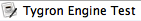
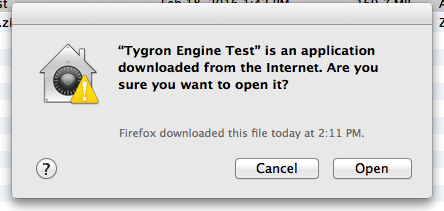

import logging; reload(logging) FORMAT=("%(asctime) -8s %(message) s") logging.basicConfig(format=FORMAT, filename="TestLog.txt", level=logging.DEBUG) logging.info("[info] Check for Operating System...") ########################################### # Let the tester select which AUT to test # ########################################### engines = ("Tygron Engine Test", "Tygron Engine Preview", "Tygron Engine 2016") selected = select("Please select which engine to test", options = engines) ############################# # Check which OS is used... # ############################# import subprocess myVer = Settings.getOSVersion() ##################### # If OS is Linux... # ##################### if Settings.isLinux(): print "Linux detected! " + myVer logging.info("[info] Linux detected !" + myVer) if selected == engines[0]: subprocess.Popen(["/home/tygron/Desktop/Tygron Engine Test/Tygron Engine Test.sh"]) elif selected == engines[1]: subprocess.Popen(["/home/tygron/Desktop/Tygron Engine Preview/Tygron Engine Preview.sh"]) else: subprocess.Popen(["/home/tygron/Desktop/Tygron Engine 2016/Tygron Engine 2016.sh"]) ####################### # If OS is Windows... # ####################### elif Settings.isWindows(): print "Windows detected! " + myVer logging.info("[info] Windows detected !" + myVer) if selected == engines[0]: #subprocess.Popen(["C:\Users\Vincent\AppData\Local\Tygron Engine Test\Tygron Engine Test.exe"]) subprocess.Popen(["C:\Users\Tygron\AppData\Local\Tygron Engine Test\Tygron Engine Test.exe"]) elif selected == engines[1]: #subprocess.Popen(["C:\Users\Vincent\AppData\Local\Tygron Engine Preview\Tygron Engine Preview.exe"]) subprocess.Popen(["C:\Users\Tygron\AppData\Local\Tygron Engine Preview\Tygron Engine Preview.exe"]) else: #subprocess.Popen(["C:\Users\Vincent\AppData\Local\Tygron Engine 2016\Tygron Engine 2016.exe"]) subprocess.Popen(["C:\Users\Vincent\AppData\Local\Tygron Engine 2016\Tygron Engine 2016.exe"]) ######################## # If OS is MacOS(X)... # ######################## elif Settings.isMac(): print "Mac OSX detected! " + myVer logging.info("[info] MAC OSX detected !" + myVer) if selected == engines[0]: App.open("Finder") click() doubleClick() if exists(, 3): click(Pattern().targetOffset(145,62)) elif selected == engines[1]: App.open("Finder") click() doubleClick() if exists(, 3): click(Pattern().targetOffset(145,62)) else: App.open("Finder") click() doubleClick() if exists(, 3): click(Pattern().targetOffset(145,62)) else: print "Unsupported OS detected!" logging.error("[error] Unsupported OS detected!") exit(1) ############################### # Check if AUT has started... # ############################### wait(3) if exists(, 2) or exists(, 2): print "[success] Engine started!" logging.info("[success] Engine started!") #exit(1) else: print "[error] Engine not started!" logging.error("[error] Engine not started!") exit(1)